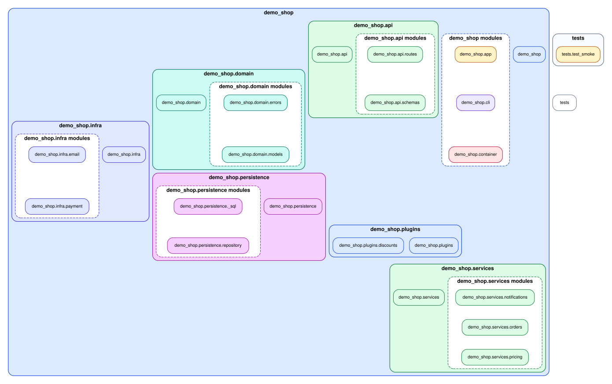
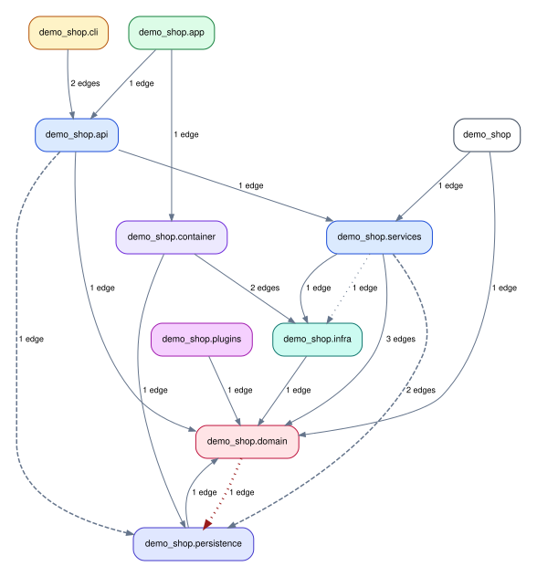

Run importscope on a demo repo
This walkthrough uses a small sample repository under
docs/examples/demo-shop-repo/.
Treat the commands below as if you are standing in the root of that package repository.
This page is about learning the workflow, not about tuning the perfect config. The idea is:
- confirm discovery works
- run one structural pass with no config
- add a small config only when you want architecture-aware grouping and policy findings
That same sequence scales to real repositories, but on larger repos you usually analyze only one package or one architectural slice at a time.
What the repo looks like
The package is a small order-processing toy app with a few intentional import smells:
demo_shop.api.routesimports the private moduledemo_shop.persistence._sqldemo_shop.domain.modelscontains a lazy import from persistencedemo_shop.services.notificationscontains a lazy import from infra
Key files:
.
├── pyproject.toml
├── src/
│ └── demo_shop/
│ ├── __init__.py
│ ├── app.py
│ ├── cli.py
│ ├── container.py
│ ├── api/
│ │ ├── __init__.py
│ │ ├── routes.py
│ │ └── schemas.py
│ ├── domain/
│ │ ├── __init__.py
│ │ ├── errors.py
│ │ └── models.py
│ ├── infra/
│ │ ├── __init__.py
│ │ ├── email.py
│ │ └── payment.py
│ ├── persistence/
│ │ ├── __init__.py
│ │ ├── _sql.py
│ │ └── repository.py
│ ├── plugins/
│ │ ├── __init__.py
│ │ └── discounts.py
│ └── services/
│ ├── __init__.py
│ ├── notifications.py
│ ├── orders.py
│ └── pricing.py
└── tests/
└── test_smoke.py
1. Check the repo
Expected output:
2. Start without a config
Before adding .importscope.yml, run one structural pass first.
Expected output:
Wrote outputs to: /path/to/demo-shop-repo/.cache/importscope
Modules parsed: 23
Internal import edges: 38
Cycles detected: 1
Policy findings: 0
This first pass is enough to start exploring the package layout:

The default overview profile can already emit a small structural bundle even
without a config:
Typical files:
module_layout_graph.svggroup_dependency_graph.svgmodule_dependency_graph.svgarchitecture_report.md
Without .importscope.yml, the run stays structural:
- no policy findings are reported
- the grouped graphs use the default package/other grouping
- discovery excludes from the repo-specific config are not applied yet
This is the right first move on an unfamiliar repo because it answers the basic questions first:
- did
importscopediscover the package you expected? - is the repo small enough for a whole-package view?
- do you already see suspicious edges or one oversized cluster that needs better grouping?
3. Create a starter config
Now generate a starter file:
Expected output:
tool:
default_profile: overview
discovery:
exclude:
- .venv/**
- venv/**
- .tox/**
- build/**
- dist/**
- .git/**
policy:
enabled: false
That starter config is intentionally small. For this demo repo, the checked-in config used below is generated by:
importscope init
importscope config package set demo_shop
importscope config exclude add 'docs/**' 'tests/**'
importscope config policy enable
importscope config module-group-depth set 3
importscope config forbid add demo_shop.domain demo_shop.persistence
importscope config forbid add demo_shop.api demo_shop.persistence._
importscope config forbid add demo_shop.services demo_shop.persistence._
Resulting config excerpt:
tool:
default_profile: overview
discovery:
exclude:
- .venv/**
- venv/**
- .tox/**
- build/**
- dist/**
- .git/**
- docs/**
- tests/**
policy:
enabled: true
module_group_depth: 3
forbidden_imports:
- source_prefixes:
- demo_shop.domain
target_prefixes:
- demo_shop.persistence
- source_prefixes:
- demo_shop.api
target_prefixes:
- demo_shop.persistence._
- source_prefixes:
- demo_shop.services
target_prefixes:
- demo_shop.persistence._
package: demo_shop
This config does three useful things:
- narrows discovery so the counts match the intended package slice
- keeps grouping and colors automatic
- enables a small set of policy rules so findings become reviewable
4. Inspect profiles after adding config
profiles lists the output bundles available for the current repo and config.
In this demo repo, adding .importscope.yml does not rename or add profiles,
because the config mainly defines grouping and policy rules, not custom profile
definitions.
Expected output:
all: All graph families and reports.
overview: Repo overview with grouped dependency graphs and summary report.
policy: Policy-focused violation and helper cleanup outputs.
symbols: Comprehensive symbol import graph plus summary.
If you define your own outputs.profiles in .importscope.yml, this command
will reflect them.
5. Run the configured analysis
With the repo config in place, you can ask for richer outputs:
importscope analyze \
--config .importscope.yml \
--profile all \
--graph package-dependency \
--graph symbol-labeled-module-dependency \
--graph symbol-import \
--policy \
--out .cache/importscope/full \
--format svg --format md --format json
Expected output:
Wrote outputs to: /path/to/demo-shop-repo/.cache/importscope/full
Modules parsed: 22
Internal import edges: 37
Cycles detected: 1
Policy findings: 2
Generated files:
module_layout_graph.svggroup_dependency_graph.svgmodule_dependency_with_symbols.svgsymbol_import_graph.svgarchitecture_report.mdanalysis_snapshot.json
Compared with the no-config run, this configured run gives you:
- policy-aware edge classification on top of the structural graphs
- auto-derived grouping and coloring for the package layout
- the repo-specific discovery excludes, so the counts drop from
23/38to22/37 - symbol-labeled module edges
- the comprehensive symbol import graph
- a JSON snapshot for
inspect
This is the full learning loop on the sample repo:
- no-config run for discovery and rough structure
- config-backed run for architectural interpretation
inspecton the saved snapshot when you want one concrete path or edge
If you want the path rendered back onto a graph instead of only as JSON:
That writes a highlighted module path graph alongside the normal outputs.
How this maps to real repos
Use the same workflow, but change the scope:
- small package repo: analyze the whole package first, as done here
- larger multi-package repo: pass
--packageto isolate one package - noisy repo with one specific question: keep the package, then exclude unrelated directories in config
- dense repo with too many internals in one box: keep the same scope, then refine
module_group_depth
The real-repo examples show each of those patterns on different repositories.
6. Inspect the outputs
Architecture report excerpt:
# Import graph report
- Modules parsed: `22`
- Internal import edges: `37`
- Lazy local edges: `2`
- Strongly connected components >1: `1`
- Private import edges: `3`
- Cross-area private import edges: `0`
- Boundary/helper cleanup candidate edges: `1`
## Findings summary
- `boundary_helper`: `1`
- `forbidden_import`: `1`
Package-level dependency graph:

Module dependency graph with symbols:
{kind=link}
Comprehensive symbol import graph:
{kind=link}
7. Inspect one concrete trace
Inspect one path:
importscope inspect \
--snapshot .cache/importscope/full/analysis_snapshot.json \
path demo_shop.api.routes demo_shop.infra.email
Expected output:
{
"mode": "path",
"paths": [
[
"demo_shop.api.routes",
"demo_shop.services.orders",
"demo_shop.services.notifications",
"demo_shop.infra.email"
]
]
}
Inspect the private import edge:
importscope inspect \
--snapshot .cache/importscope/full/analysis_snapshot.json \
edge demo_shop.api.routes demo_shop.persistence._sql
Expected output: